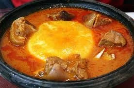

Our Story

Welcome to Ghana Recipes – your go-to source for delicious, authentic, and easy-to-follow Ghanaian meals!
We are passionate about preserving and sharing the rich culinary heritage of Ghana. From the spicy aroma of jollof rice to the comforting flavors of banku and okro stew, our recipes bring the heart of Ghanaian kitchens to your table.
Whether you're a beginner or a seasoned cook, our step-by-step guides will help you enjoy traditional meals made with love.
Meet the Cook Behind the Flavors
Gifty Akosua Arkoh
Founder & Recipe Curator
As a proud Ghanaian and food enthusiast, Gifty combines her love for cooking with her passion for education and culture to create a vibrant food experience for all.